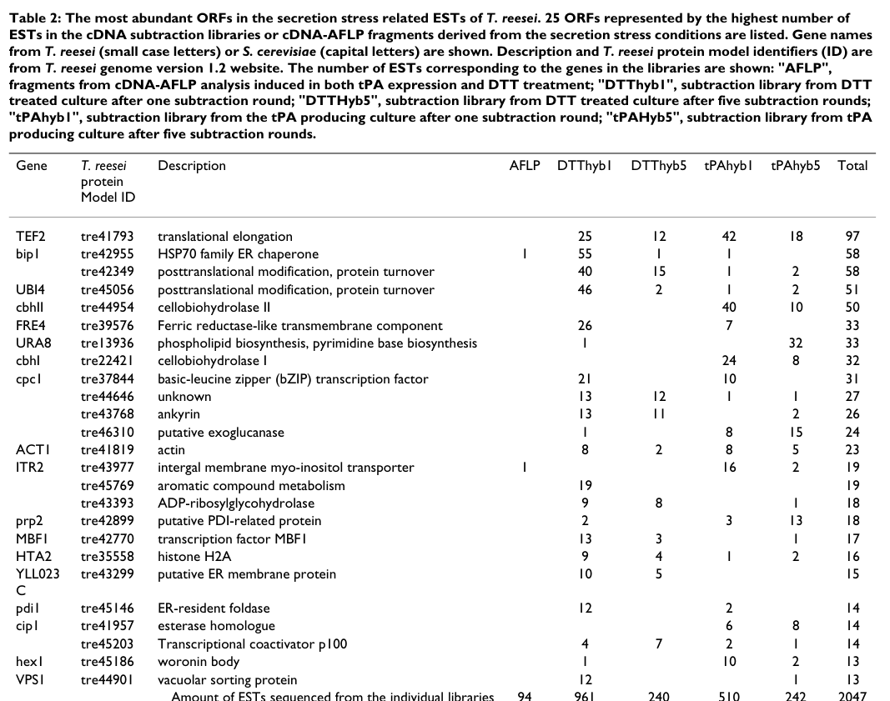

IRE1 (Ire1p) is a type I transmembrane serine/threonine-protein kinase and endoribonuclease that serves as the primary ER stress sensor in Trichoderma reesei (Hypocrea jecorina). It is the ortholog of S. cerevisiae IRE1 (P32361). The protein contains an N-terminal lumenal domain (residues 36-585) that senses unfolded proteins, a single transmembrane helix (residues 586-606), and a cytoplasmic portion with both a protein kinase domain (residues 809-1105) and a KEN/endoribonuclease domain (residues 1108-1240). The T. reesei IRE1 has intrinsic kinase activity demonstrated by in vitro autophosphorylation assay (PMID:15480788). It can complement S. cerevisiae ire1 mutants, confirming functional conservation. Overexpression of ire1 upregulates UPR target genes (bip1, pdi1) and induces HAC1 mRNA splicing (PMID:15480788).
| GO Term | Evidence | Action | Reason |
|---|---|---|---|
|
GO:0051082
unfolded protein binding
|
IEA
GO_REF:0000118 |
MARK AS OVER ANNOTATED |
Summary: TreeGrafter IEA annotation for unfolded protein binding. GO:0051082 is proposed for obsoletion. IRE1 senses unfolded proteins via its lumenal domain, but this is a signaling/sensor function, not a chaperone function. Following the precedent set for S. cerevisiae IRE1 (P32361), this should be marked as over-annotated.
Reason: GO:0051082 is proposed for obsoletion. While IRE1 detects unfolded proteins in the ER lumen, its binding serves a sensor/signaling function, not a chaperone function. IRE1 does not assist protein folding. The unfolded protein sensing function is already captured by GO:0036498 (IRE1-mediated unfolded protein response) and GO:0030968 (ER unfolded protein response). Following the yeast IRE1 (P32361) precedent where the same annotation was marked as over-annotated.
|
|
GO:0070059
intrinsic apoptotic signaling pathway in response to endoplasmic reticulum stress
|
IEA
GO_REF:0000118 |
MARK AS OVER ANNOTATED |
Summary: TreeGrafter IEA annotation for apoptotic signaling in response to ER stress. This term is primarily relevant to metazoan IRE1alpha/beta where IRE1 contributes to apoptosis under prolonged ER stress via JNK pathway. T. reesei, like S. cerevisiae, does not have classical apoptosis. This annotation is inferred from metazoan orthologs and is not appropriate for this fungal protein.
Reason: Filamentous fungi do not have classical apoptosis. This annotation is inferred from mammalian IRE1 orthologs via TreeGrafter. Following the yeast IRE1 (P32361) precedent where the same annotation was marked as over-annotated for the same reason. The core function of T. reesei IRE1 is the UPR signaling pathway, not apoptotic signaling.
|
|
GO:1990604
IRE1-TRAF2-ASK1 complex
|
IEA
GO_REF:0000118 |
REMOVE |
Summary: TreeGrafter IEA annotation for IRE1-TRAF2-ASK1 complex. This complex is specific to metazoan IRE1alpha signaling. TRAF2 and ASK1 are metazoan-specific proteins that do not exist in fungi. T. reesei IRE1 cannot form this complex.
Reason: The IRE1-TRAF2-ASK1 complex is a metazoan-specific signaling complex. TRAF2 and ASK1 have no orthologs in T. reesei or other filamentous fungi. This TreeGrafter annotation is incorrectly propagated from metazoan orthologs and is biologically impossible in this organism.
|
|
GO:0000166
nucleotide binding
|
IEA
GO_REF:0000043 |
ACCEPT |
Summary: IEA annotation for nucleotide binding from UniProt keyword mapping. IRE1 binds ATP/ADP in its kinase domain. The protein has ATP-binding keyword in UniProt.
Reason: Correct but very broad. IRE1 binds ATP for its kinase activity. The more specific term GO:0005524 (ATP binding) is also annotated. Acceptable as a broad IEA.
|
|
GO:0004521
RNA endonuclease activity
|
IEA
GO_REF:0000120 |
ACCEPT |
Summary: Combined IEA annotation for RNA endonuclease activity based on ARBA, InterPro, and PANTHER. IRE1 has a KEN endoribonuclease domain (residues 1108-1240) that cleaves HAC1 mRNA. Consistent with IGI evidence (PMID:15480788).
Reason: Correct. IRE1 is a site-specific endonuclease. The KEN domain is conserved across IRE1 orthologs and complementation of S. cerevisiae ire1 mutants confirms functional conservation including mRNA splicing (PMID:15480788).
Supporting Evidence:
file:CANGA/IRE1/IRE1-deep-research-falcon.md
Direct T. reesei substrate evidence: Valkonen et al. observed that T. reesei ire1 overexpression results in appearance of an additional, shorter hac1 mRNA species (Northern blot band), consistent with Ire1-dependent processing/activation of hac1.
|
|
GO:0004540
RNA nuclease activity
|
IEA
GO_REF:0000002 |
ACCEPT |
Summary: IEA annotation for RNA nuclease activity from InterPro (KEN domain). Broader parent of RNA endonuclease activity.
Reason: Correct but less specific than GO:0004521. Acceptable as a broad IEA.
|
|
GO:0004672
protein kinase activity
|
IEA
GO_REF:0000002 |
ACCEPT |
Summary: IEA annotation for protein kinase activity from InterPro. Broader parent of protein serine/threonine kinase activity.
Reason: Correct but less specific than GO:0004674. Acceptable as an IEA. Consistent with IDA evidence (PMID:15480788).
|
|
GO:0004674
protein serine/threonine kinase activity
|
IEA
GO_REF:0000120 |
ACCEPT |
Summary: Combined IEA annotation for protein Ser/Thr kinase activity based on InterPro, EC number, UniProt keyword, and PANTHER. Consistent with IDA evidence (PMID:15480788).
Reason: Correct. IRE1 has intrinsic kinase activity demonstrated by in vitro autophosphorylation assay (PMID:15480788). Consistent with IDA evidence.
Supporting Evidence:
file:CANGA/IRE1/IRE1-deep-research-falcon.md
Biochemically, a recombinant GST fusion spanning aa 607-1243 undergoes autophosphorylation in vitro, demonstrating intrinsic kinase activity of the cytosolic domain.
|
|
GO:0005524
ATP binding
|
IEA
GO_REF:0000120 |
ACCEPT |
Summary: Combined IEA annotation for ATP binding. IRE1 binds ATP in its kinase domain. Based on InterPro and UniProt keyword mapping.
Reason: Correct. ATP binding is essential for kinase activity. IRE1 autophosphorylation requires ATP (PMID:15480788).
|
|
GO:0005789
endoplasmic reticulum membrane
|
IEA
GO_REF:0000044 |
ACCEPT |
Summary: IEA annotation for ER membrane from UniProt subcellular location mapping. IRE1 is a type I transmembrane protein with a single transmembrane helix (residues 586-606) spanning the ER membrane.
Reason: Correct. IRE1 is a type I ER transmembrane protein with lumenal and cytoplasmic domains. Confirmed by topology and transmembrane helix prediction in UniProt.
|
|
GO:0006397
mRNA processing
|
IEA
GO_REF:0000002 |
ACCEPT |
Summary: IEA annotation for mRNA processing from InterPro (KEN domain). IRE1 endoribonuclease domain processes HAC1 mRNA through unconventional splicing. Overexpression of T. reesei ire1 leads to HAC1 mRNA splicing (PMID:15480788).
Reason: Correct. IRE1 endoribonuclease activity directly processes HAC1 pre-mRNA. Confirmed by observation of HAC1 mRNA splicing upon ire1 overexpression (PMID:15480788).
Supporting Evidence:
PMID:15480788
Splicing of the mRNA encoding the transcription factor HAC1 is also observed.
|
|
GO:0016301
kinase activity
|
IEA
GO_REF:0000043 |
ACCEPT |
Summary: IEA annotation for kinase activity from UniProt keyword mapping. Broader parent of protein kinase activity.
Reason: Correct but very broad. Acceptable as an IEA. More specific terms are also annotated.
|
|
GO:0016740
transferase activity
|
IEA
GO_REF:0000043 |
ACCEPT |
Summary: IEA annotation for transferase activity from UniProt keyword mapping. Very broad parent of kinase activity.
Reason: Correct but extremely broad. Acceptable as an IEA.
|
|
GO:0016787
hydrolase activity
|
IEA
GO_REF:0000043 |
ACCEPT |
Summary: IEA annotation for hydrolase activity from UniProt keyword mapping. Broad parent of RNA nuclease activity.
Reason: Correct but extremely broad. The endoribonuclease activity is a hydrolase activity. Acceptable as a broad IEA.
|
|
GO:0030968
endoplasmic reticulum unfolded protein response
|
IEA
GO_REF:0000002 |
ACCEPT |
Summary: IEA annotation for ER UPR from InterPro. IRE1 is the primary sensor and effector of the UPR in T. reesei. Overexpression upregulates UPR target genes bip1 and pdi1 (PMID:15480788).
Reason: Correct. This is the core biological process of IRE1. Confirmed by functional studies showing UPR target gene upregulation (PMID:15480788).
Supporting Evidence:
PMID:15480788
Overexpression of ire1 in a T. reesei strain that expresses a foreign protein (laccase 1 from Phlebia radiata), results in up-regulation of the UPR pathway, as indicated by the increased expression levels of the known UPR target genes bip1 and pdi1.
|
|
GO:0036498
IRE1-mediated unfolded protein response
|
IEA
GO_REF:0000120 |
ACCEPT |
Summary: Combined IEA annotation for IRE1-mediated UPR based on ARBA and PANTHER. This is the core biological process of IRE1. Consistent with IGI evidence (PMID:15480788).
Reason: Correct. This is the defining biological process for IRE1. T. reesei IRE1 complements S. cerevisiae ire1 mutants, confirming functional conservation of the IRE1-mediated UPR pathway (PMID:15480788).
Supporting Evidence:
PMID:15480788
The data presented demonstrates that the T. reesei genes can complement Saccharomyces cerevisiae mutants that are deficient in the corresponding homologues.
file:CANGA/IRE1/IRE1-deep-research-falcon.md
Primary molecular function: ER-stress sensing -> Ire1 activation (oligomerization/autophosphorylation) -> RNase-dependent processing/activation of hac1 mRNA (unconventional splicing + 5' truncation) -> transcriptional induction of ER folding and secretory-pathway genes.
|
|
GO:0046872
metal ion binding
|
IEA
GO_REF:0000043 |
ACCEPT |
Summary: IEA annotation for metal ion binding from UniProt keyword (Magnesium). IRE1 kinase domain requires Mg2+ as a cofactor, with binding residues at positions 936 and 953 (by similarity to S. cerevisiae IRE1).
Reason: Correct. Mg2+ is required as a cofactor for kinase activity. Binding residues annotated in UniProt by similarity to S. cerevisiae IRE1.
|
|
GO:0004521
RNA endonuclease activity
|
IGI
PMID:15480788 The ire1 and ptc2 genes involved in the unfolded protein res... |
ACCEPT |
Summary: IGI annotation for RNA endonuclease activity based on complementation of S. cerevisiae ire1 mutants with T. reesei ire1 (with/from P32361). The complementation demonstrates that T. reesei IRE1 can substitute for yeast IRE1 endonuclease function in HAC1 mRNA splicing (PMID:15480788).
Reason: Core molecular function of IRE1. Demonstrated by complementation of yeast ire1 mutant and observation of HAC1 mRNA splicing upon ire1 overexpression (PMID:15480788). The KEN domain (residues 1108-1240) is the catalytic domain.
Supporting Evidence:
PMID:15480788
The data presented demonstrates that the T. reesei genes can complement Saccharomyces cerevisiae mutants that are deficient in the corresponding homologues.
|
|
GO:0004674
protein serine/threonine kinase activity
|
IDA
PMID:15480788 The ire1 and ptc2 genes involved in the unfolded protein res... |
ACCEPT |
Summary: IDA annotation for protein Ser/Thr kinase activity from Valkonen et al. (2004). The T. reesei IRE1 protein has intrinsic kinase activity demonstrated by in vitro autophosphorylation assay (PMID:15480788).
Reason: Core molecular function of IRE1. Directly demonstrated by in vitro autophosphorylation assay (PMID:15480788). UniProt annotates autophosphorylation mainly on serine residues.
Supporting Evidence:
PMID:15480788
The T. reesei IREI protein has intrinsic kinase activity, as revealed by an in vitro autophosphorylation assay.
|
|
GO:0036498
IRE1-mediated unfolded protein response
|
IGI
PMID:15480788 The ire1 and ptc2 genes involved in the unfolded protein res... |
ACCEPT |
Summary: IGI annotation for IRE1-mediated UPR based on complementation of S. cerevisiae ire1 mutant (with/from P32361) and overexpression studies showing upregulation of UPR target genes and HAC1 mRNA splicing (PMID:15480788).
Reason: Core biological process of IRE1. Demonstrated by complementation of yeast ire1 mutant and functional studies showing UPR pathway activation (PMID:15480788).
Supporting Evidence:
PMID:15480788
Overexpression of ire1 in a T. reesei strain that expresses a foreign protein (laccase 1 from Phlebia radiata), results in up-regulation of the UPR pathway, as indicated by the increased expression levels of the known UPR target genes bip1 and pdi1.
|
|
GO:0051082
unfolded protein binding
|
IGI
PMID:15480788 The ire1 and ptc2 genes involved in the unfolded protein res... |
MARK AS OVER ANNOTATED |
Summary: IGI annotation for unfolded protein binding based on complementation of S. cerevisiae ire1 mutant (with/from P32361). GO:0051082 is proposed for obsoletion. While IRE1 senses unfolded proteins via its lumenal domain, this is a sensor/signaling function, not a chaperone function. Following the S. cerevisiae IRE1 (P32361) precedent where the same annotation was marked as over-annotated.
Reason: GO:0051082 is proposed for obsoletion. IRE1 senses unfolded proteins in the ER lumen to trigger the UPR signaling cascade. This is a sensor function, not a chaperone function -- IRE1 does not assist protein folding. The sensing function is already captured by GO:0036498 (IRE1-mediated UPR) and GO:0030968 (ER UPR). Following the S. cerevisiae IRE1 (P32361) precedent where both IBA and IDA annotations for GO:0051082 were marked as MARK_AS_OVER_ANNOTATED. There is currently no appropriate GO MF term for "unfolded protein sensor activity" to use as a replacement. Note that PMID:15480788 does not directly demonstrate unfolded protein binding by the T. reesei protein; this annotation is based on genetic interaction with the S. cerevisiae ortholog.
|
The research report should be a detailed narrative explaining the function, biological processes, and localization of the gene product. Citations should be given for all claims.
You should prioritize authoritative reviews and primary scientific literature when conducting research. You can supplement
this with annotations you find in gene/protein databases, but these can be outdated or inaccurate.
We are specifically interested in the primary function of the gene - for enzymes, what reaction is catalyzed, and what is the substrate specificity? For transporters, what is the substrate? For structural proteins or adapters, what is the broader structural role? For signaling molecules, what is the role in the pathway.
We are interested in where in or outside the cell the gene product carries out its function.
We are also interested in the signaling or biochemical pathways in which the gene functions. We are less interested in broad pleiotropic effects, except where these elucidate the precise role.
Include evidence where possible. We are interested in both experimental evidence as well as inference from structure, evolution, or bioinformatic analysis. Precise studies should be prioritized over high-throughput, where available.
The gene symbol IRE1 is widely used across eukaryotes (yeasts, filamentous fungi, animals) for the ER stress sensor “inositol-requiring enzyme 1”. Here the target is specifically T. reesei (teleomorph Hypocrea jecorina) ire1 encoding a bifunctional serine/threonine protein kinase + endoribonuclease. Primary T. reesei evidence confirms this identity: Valkonen et al. cloned and characterized T. reesei ire1 (GenBank AY328083), showing canonical Ire1 topology and activity, plus functional complementation of S. cerevisiae ire1Δ and downstream hac1 mRNA processing and UPR gene induction (valkonen2004theire1and pages 2-3, valkonen2004theire1and pages 3-6, valkonen2004theire1and pages 1-2). This aligns with the UniProt description provided (G0RBE3) and supports that the report is about the correct fungal Ire1 ortholog rather than mammalian IRE1α/β.
ER stress arises when secretory-pathway demand exceeds ER folding capacity, leading to accumulation of unfolded/misfolded proteins. The UPR is a transcriptional and physiological adaptation program that increases folding capacity, quality control, and secretory-pathway throughput. In fungi, the UPR is primarily mediated by an IRE1–HAC1/HacA signaling axis; unlike metazoans, fungi generally lack the PERK and ATF6 branches, increasing the centrality of Ire1 to ER homeostasis (zhou2025theunfoldedprotein pages 5-5).
Ire1 is an ER membrane protein that couples stress sensing to RNA processing. Canonically, ER stress triggers Ire1 oligomerization and trans-autophosphorylation, activating its RNase output; the RNase then catalyzes unconventional (spliceosome-independent) intron removal from HAC1/hacA mRNA, enabling translation of the bZIP transcription factor that activates UPR target genes (fauzee2023endoplasmicstresssensor pages 1-2, zhou2025theunfoldedprotein pages 5-5).
In T. reesei and several filamentous fungi, hac1/hacA activation involves (i) splicing of a short nonconventional intron (~20 nt) and (ii) additional 5′ truncation of the mRNA that can relieve translational repression by upstream ORFs, providing an extra control layer compared with the canonical budding-yeast model (jadhav2024proteinsecretionand pages 7-8, ishiwatakimata2023fundamentalandapplicative pages 8-10).
T. reesei Ire1 is reported as a 1,243-aa protein with a predicted N-terminal signal peptide (~25 aa), consistent with luminal entry and type-I membrane topology. A single transmembrane segment is predicted at codons 584–606, placing the N-terminus in the ER lumen and the C-terminal catalytic module in the cytosol (valkonen2004theire1and pages 2-3).
A cytosolic protein kinase domain is predicted at aa 809–1105, and the C-terminal ~232 aa show similarity to human RNase L, consistent with an endoribonuclease effector module required for UPR signaling (valkonen2004theire1and pages 3-6, valkonen2004theire1and pages 2-3). These features match the UniProt annotation of a serine/threonine-protein kinase/endoribonuclease precursor.
Biochemically, a recombinant GST fusion spanning aa 607–1243 undergoes autophosphorylation in vitro, demonstrating intrinsic kinase activity of the cytosolic domain (valkonen2004theire1and pages 2-3). While the in vivo phosphorylation targets within Ire1 were not mapped in the retrieved excerpts, the activation paradigm described for fungal Ire1 generally involves oligomerization and trans-autophosphorylation of the kinase domain during ER stress (fauzee2023endoplasmicstresssensor pages 1-2, zhou2025theunfoldedprotein pages 5-5).
Direct T. reesei substrate evidence: Valkonen et al. observed that T. reesei ire1 overexpression results in appearance of an additional, shorter hac1 mRNA species (Northern blot band), consistent with Ire1-dependent processing/activation of hac1 (valkonen2004theire1and pages 3-6). A filamentous-fungal model includes splicing of a ~20 nt intron plus ~200–250 nt 5′ truncation in T. reesei hac1 transcripts (jadhav2024proteinsecretionand pages 7-8, ishiwatakimata2023fundamentalandapplicative pages 8-10).
Broader fungal RNase outputs (inference beyond T. reesei): Recent expert syntheses emphasize that Ire1 RNase can also mediate regulated Ire1-dependent decay (RIDD) of ER-localized mRNAs, with relative reliance on HAC1 splicing versus RIDD varying by fungal lineage (ishiwatakimata2023fundamentalandapplicative pages 8-10, ishiwatakimata2023fundamentalandapplicative pages 14-15). Importantly, this broader RNase output has not been directly demonstrated for T. reesei in the retrieved primary sources, so RIDD should be considered plausible but currently unconfirmed for this organism in this evidence set.
The predicted type-I transmembrane topology and the canonical mechanism (BiP/Bip1 luminal regulation, cytosolic kinase/RNase activation) place T. reesei Ire1 at the endoplasmic reticulum membrane (valkonen2004theire1and pages 2-3, jadhav2024proteinsecretionand pages 7-8, fauzee2023endoplasmicstresssensor pages 1-2).
Ire1 is the upstream sensor and activator of the fungal UPR transcriptional program through hac1 activation. In T. reesei, UPR activation induces ER chaperones/foldases and secretory-pathway genes (including bip1, pdi1, lhs1, sec61, snc1, pmi40, ino1), consistent with a broad remodeling of folding, translocation, vesicle trafficking, glycosylation, and lipid biosynthesis capacity (valkonen2004theire1and pages 6-7, saloheimo2012thecargoand pages 7-8).
In T. reesei transformants, ire1 overexpression induced multiple UPR-associated targets (Northern blot evidence) and changed hac1 transcript patterns (shorter/activated band) (valkonen2004theire1and pages 3-6, valkonen2004theire1and pages 6-7). Reported quantitative transcriptional responses under strong UPR induction include lhs1 ~8-fold, sec61 ~5-fold, snc1 ~2-fold, pmi40 ~2-fold, and ino1 ~1.5-fold (valkonen2004theire1and pages 6-7). In the same study, tunicamycin-induced UPR increased a UPRE-lacZ reporter by ~5-fold, and a ptc2 disruptant showed ~2× higher tunicamycin induction vs parental (valkonen2004theire1and pages 6-7).
A secretion-stress study in T. reesei (DTT treatment and heterologous tPA production) isolated 457 unique genes putatively induced under secretion stress and validated 60 genes by Northern analysis, using an ire1-overexpression strain as part of defining “UPR-like” genes (arvas2006commonfeaturesand pages 10-11, arvas2006commonfeaturesand pages 1-2). In EST library counts, bip1 was represented by 58 ESTs and pdi1 by 14 ESTs, reflecting strong enrichment of canonical ER quality-control markers among secretion-stress-induced transcripts (arvas2006commonfeaturesand pages 5-7). The associated Table/Figure evidence is available in the retrieved visuals (arvas2006commonfeaturesand media f21b2126, arvas2006commonfeaturesand media bc408af3).
A 2023 study summarizes that the industrial hyperproducer Rut-C30 secretes ~2.7× more total protein than the reference QM6a and has ~7-fold higher ER content during the secretory phase, linking ER expansion/UPR-relevant physiology to industrial secretion capacity (alharake2023effectofthe pages 1-2). Complementary 2014 data indicate earlier and stronger induction of UPR/ERAD-related transcripts in Rut-C30 during cellulase induction (e.g., ire1 ~4-fold at 1 h vs ~3-fold at 6 h in QM9414; ERV2 ~24-fold and a thioredoxin-like gene ~90-fold at 1 h) (wang2014effectofearlier pages 4-7).
A 2023 authoritative review of yeast/fungal UPR emphasizes that Ire1 outputs differ by species: some fungi rely heavily on HAC1 splicing, while others use RIDD more prominently; it also highlights HAC1-independent roles for Ire1 in some yeasts, implying that “Ire1 pathway engineering” must be tailored to each organism’s wiring (ishiwatakimata2023fundamentalandapplicative pages 8-10, ishiwatakimata2023fundamentalandapplicative pages 14-15). For T. reesei, this motivates research into whether RIDD exists and how it impacts high-level cellulase secretion.
A 2024 review focused on industrially employed filamentous fungi (including T. reesei) frames UPR as a central response to secretion load but notes that RESS (repression under secretion stress) appears absent in S. cerevisiae and has been reported in T. reesei mainly under chemical ER stressors such as DTT and tunicamycin; the review argues more targeted mechanistic work is needed to exploit these pathways reliably in strain engineering (jadhav2024proteinsecretionand pages 1-2, jadhav2024proteinsecretionand pages 7-8).
While not T. reesei-specific, 2023 work in a high-secretion filamentous fungus (Aspergillus) demonstrates that RIDD can be triggered under physiologically high secretory load, strengthening the plausibility that high-enzyme-production conditions could activate Ire1 RNase outputs beyond hacA splicing in industrial fungi (ishiwatakimata2023fundamentalandapplicative pages 8-10).
UPR markers (e.g., Bip1/Pdi1 localization and transcript induction) are used as diagnostic readouts to compare industrial T. reesei strains and understand whether secretion phenotypes are inherent or induced. A 2024 review summarizes imaging of a BiP1-VenusYFP fusion in Rut-C30 vs QM6a and the interpretation that observed ER structural differences are inherent rather than overload-driven (jadhav2024proteinsecretionand pages 6-7).
A practical industrial route is to engineer ER folding and glycosylation capacity (chaperones/foldases and quality-control components). In T. reesei, overexpression of ER factors (e.g., Pdi1, Ero1, BiP, Gpt1, Gls2) and deletion of a mannosidase (mns1) increased β-glucosidase secretion by 29.2%–112.5% and achieved up to a 149.4% increase in total cellulase activity (FPA), illustrating real-world use of ER quality-control engineering to boost enzyme output (shen2021engineeringtheendoplasmic pages 1-2).
Direct overexpression of T. reesei ire1 can induce UPR programs (bip1/pdi1 and other targets) and alter hac1 transcript processing, but strong UPR induction can correlate with growth retardation and lower total secreted protein (with little improvement in specific heterologous laccase activity), indicating a tradeoff: boosting UPR signaling is not automatically productivity-enhancing and may increase metabolic burden or trigger stress programs that reduce net secretion (valkonen2004theire1and pages 6-7, saloheimo2012thecargoand pages 7-8).
Recent expert reviews emphasize two practical conclusions:
1) Conservation with divergence: the Ire1–Hac1 axis is conserved, but intron structures, translational repression, and additional Ire1 outputs (RIDD or HAC1-independent roles) vary across fungi; thus, functional annotation should include both the canonical pathway and the possibility of additional RNase outputs, clearly labeling what is proven in the target organism (ishiwatakimata2023fundamentalandapplicative pages 8-10, ishiwatakimata2023fundamentalandapplicative pages 14-15).
2) Engineering requires balance: constitutive or excessive activation of UPR can enlarge the ER and improve folding capacity, but can also reduce growth or increase degradation and does not guarantee improved secretion yields; industrial optimization often benefits from “tuning” stress pathways rather than maximizing them (jadhav2024proteinsecretionand pages 7-8, jadhav2024proteinsecretionand pages 1-2).
Arvas et al. provide a key visual overview of secretion-stress induced genes in T. reesei: (i) a table highlighting abundant UPR markers such as bip1 and pdi1, and (ii) Northern blots validating stress induction under DTT, heterologous protein production, and ire1 overexpression (arvas2006commonfeaturesand media f21b2126, arvas2006commonfeaturesand media bc408af3).
References
(valkonen2004theire1and pages 2-3): M. Valkonen, M. Penttilä, and M. Saloheimo. The ire1 and ptc2 genes involved in the unfolded protein response pathway in the filamentous fungus trichoderma reesei. Molecular Genetics and Genomics, 272:443-451, Oct 2004. URL: https://doi.org/10.1007/s00438-004-1070-0, doi:10.1007/s00438-004-1070-0. This article has 44 citations and is from a peer-reviewed journal.
(valkonen2004theire1and pages 3-6): M. Valkonen, M. Penttilä, and M. Saloheimo. The ire1 and ptc2 genes involved in the unfolded protein response pathway in the filamentous fungus trichoderma reesei. Molecular Genetics and Genomics, 272:443-451, Oct 2004. URL: https://doi.org/10.1007/s00438-004-1070-0, doi:10.1007/s00438-004-1070-0. This article has 44 citations and is from a peer-reviewed journal.
(valkonen2004theire1and pages 1-2): M. Valkonen, M. Penttilä, and M. Saloheimo. The ire1 and ptc2 genes involved in the unfolded protein response pathway in the filamentous fungus trichoderma reesei. Molecular Genetics and Genomics, 272:443-451, Oct 2004. URL: https://doi.org/10.1007/s00438-004-1070-0, doi:10.1007/s00438-004-1070-0. This article has 44 citations and is from a peer-reviewed journal.
(zhou2025theunfoldedprotein pages 5-5): Hao Zhou, Jinping Zhang, Rong Wang, Ju Huang, Caiyan Xin, and Zhangyong Song. The unfolded protein response is a potential therapeutic target in pathogenic fungi. The FEBS journal, Apr 2025. URL: https://doi.org/10.1111/febs.70100, doi:10.1111/febs.70100. This article has 4 citations.
(fauzee2023endoplasmicstresssensor pages 1-2): Yasmin Nabilah Binti Mohd Fauzee, Yuki Yoshida, and Yukio Kimata. Endoplasmic stress sensor ire1 is involved in cytosolic/nuclear protein quality control in pichia pastoris cells independent of hac1. Frontiers in Microbiology, Jun 2023. URL: https://doi.org/10.3389/fmicb.2023.1157146, doi:10.3389/fmicb.2023.1157146. This article has 9 citations and is from a peer-reviewed journal.
(jadhav2024proteinsecretionand pages 7-8): Reshma Jadhav, Robert L Mach, and Astrid R Mach-Aigner. Protein secretion and associated stress in industrially employed filamentous fungi. Applied Microbiology and Biotechnology, Jan 2024. URL: https://doi.org/10.1007/s00253-023-12985-4, doi:10.1007/s00253-023-12985-4. This article has 27 citations and is from a domain leading peer-reviewed journal.
(ishiwatakimata2023fundamentalandapplicative pages 8-10): Yuki Ishiwata-Kimata and Yukio Kimata. Fundamental and applicative aspects of the unfolded protein response in yeasts. Journal of Fungi, 9:989, Oct 2023. URL: https://doi.org/10.3390/jof9100989, doi:10.3390/jof9100989. This article has 21 citations.
(ishiwatakimata2023fundamentalandapplicative pages 14-15): Yuki Ishiwata-Kimata and Yukio Kimata. Fundamental and applicative aspects of the unfolded protein response in yeasts. Journal of Fungi, 9:989, Oct 2023. URL: https://doi.org/10.3390/jof9100989, doi:10.3390/jof9100989. This article has 21 citations.
(valkonen2004theire1and pages 6-7): M. Valkonen, M. Penttilä, and M. Saloheimo. The ire1 and ptc2 genes involved in the unfolded protein response pathway in the filamentous fungus trichoderma reesei. Molecular Genetics and Genomics, 272:443-451, Oct 2004. URL: https://doi.org/10.1007/s00438-004-1070-0, doi:10.1007/s00438-004-1070-0. This article has 44 citations and is from a peer-reviewed journal.
(saloheimo2012thecargoand pages 7-8): Markku Saloheimo and Tiina M. Pakula. The cargo and the transport system: secreted proteins and protein secretion in trichoderma reesei (hypocrea jecorina). Microbiology, 158 Pt 1:46-57, Jan 2012. URL: https://doi.org/10.1099/mic.0.053132-0, doi:10.1099/mic.0.053132-0. This article has 176 citations and is from a peer-reviewed journal.
(arvas2006commonfeaturesand pages 10-11): Mikko Arvas, Tiina Pakula, Karin Lanthaler, Markku Saloheimo, Mari Valkonen, Tapani Suortti, Geoff Robson, and Merja Penttilä. Common features and interesting differences in transcriptional responses to secretion stress in the fungi trichoderma reesei and saccharomyces cerevisiae. BMC Genomics, 7:32-32, Feb 2006. URL: https://doi.org/10.1186/1471-2164-7-32, doi:10.1186/1471-2164-7-32. This article has 107 citations and is from a peer-reviewed journal.
(arvas2006commonfeaturesand pages 1-2): Mikko Arvas, Tiina Pakula, Karin Lanthaler, Markku Saloheimo, Mari Valkonen, Tapani Suortti, Geoff Robson, and Merja Penttilä. Common features and interesting differences in transcriptional responses to secretion stress in the fungi trichoderma reesei and saccharomyces cerevisiae. BMC Genomics, 7:32-32, Feb 2006. URL: https://doi.org/10.1186/1471-2164-7-32, doi:10.1186/1471-2164-7-32. This article has 107 citations and is from a peer-reviewed journal.
(arvas2006commonfeaturesand pages 5-7): Mikko Arvas, Tiina Pakula, Karin Lanthaler, Markku Saloheimo, Mari Valkonen, Tapani Suortti, Geoff Robson, and Merja Penttilä. Common features and interesting differences in transcriptional responses to secretion stress in the fungi trichoderma reesei and saccharomyces cerevisiae. BMC Genomics, 7:32-32, Feb 2006. URL: https://doi.org/10.1186/1471-2164-7-32, doi:10.1186/1471-2164-7-32. This article has 107 citations and is from a peer-reviewed journal.
(arvas2006commonfeaturesand media f21b2126): Mikko Arvas, Tiina Pakula, Karin Lanthaler, Markku Saloheimo, Mari Valkonen, Tapani Suortti, Geoff Robson, and Merja Penttilä. Common features and interesting differences in transcriptional responses to secretion stress in the fungi trichoderma reesei and saccharomyces cerevisiae. BMC Genomics, 7:32-32, Feb 2006. URL: https://doi.org/10.1186/1471-2164-7-32, doi:10.1186/1471-2164-7-32. This article has 107 citations and is from a peer-reviewed journal.
(arvas2006commonfeaturesand media bc408af3): Mikko Arvas, Tiina Pakula, Karin Lanthaler, Markku Saloheimo, Mari Valkonen, Tapani Suortti, Geoff Robson, and Merja Penttilä. Common features and interesting differences in transcriptional responses to secretion stress in the fungi trichoderma reesei and saccharomyces cerevisiae. BMC Genomics, 7:32-32, Feb 2006. URL: https://doi.org/10.1186/1471-2164-7-32, doi:10.1186/1471-2164-7-32. This article has 107 citations and is from a peer-reviewed journal.
(alharake2023effectofthe pages 1-2): Jawad Alharake, Frédérique Bidard, Thiziri Aouam, Catherine Sénamaud-Beaufort, Antoine Margeot, and Senta Heiss-Blanquet. Effect of the res2 transcription factor gene deletion on protein secretion and stress response in the hyperproducer strain trichoderma reesei rut-c30. BMC Microbiology, Nov 2023. URL: https://doi.org/10.1186/s12866-023-03125-z, doi:10.1186/s12866-023-03125-z. This article has 5 citations and is from a peer-reviewed journal.
(wang2014effectofearlier pages 4-7): Guokun Wang, Dongyuan Zhang, and Shulin Chen. Effect of earlier unfolded protein response and efficient protein disposal system on cellulase production in rut c30. World Journal of Microbiology and Biotechnology, 30:2587-2595, Jun 2014. URL: https://doi.org/10.1007/s11274-014-1682-4, doi:10.1007/s11274-014-1682-4. This article has 27 citations and is from a peer-reviewed journal.
(jadhav2024proteinsecretionand pages 1-2): Reshma Jadhav, Robert L Mach, and Astrid R Mach-Aigner. Protein secretion and associated stress in industrially employed filamentous fungi. Applied Microbiology and Biotechnology, Jan 2024. URL: https://doi.org/10.1007/s00253-023-12985-4, doi:10.1007/s00253-023-12985-4. This article has 27 citations and is from a domain leading peer-reviewed journal.
(jadhav2024proteinsecretionand pages 6-7): Reshma Jadhav, Robert L Mach, and Astrid R Mach-Aigner. Protein secretion and associated stress in industrially employed filamentous fungi. Applied Microbiology and Biotechnology, Jan 2024. URL: https://doi.org/10.1007/s00253-023-12985-4, doi:10.1007/s00253-023-12985-4. This article has 27 citations and is from a domain leading peer-reviewed journal.
(shen2021engineeringtheendoplasmic pages 1-2): Linjing Shen, Jia Gao, Yifan Wang, Xihai Li, Hong Liu, and Yaohua Zhong. Engineering the endoplasmic reticulum secretory pathway in trichoderma reesei for improved cellulase production. Enzyme and Microbial Technology, 152:109923, Dec 2021. URL: https://doi.org/10.1016/j.enzmictec.2021.109923, doi:10.1016/j.enzmictec.2021.109923. This article has 24 citations and is from a peer-reviewed journal.

id: G0RBE3
gene_symbol: IRE1
product_type: PROTEIN
status: IN_PROGRESS
taxon:
id: NCBITaxon:431241
label: Hypocrea jecorina (strain QM6a)
description: >-
IRE1 (Ire1p) is a type I transmembrane serine/threonine-protein kinase and
endoribonuclease that serves as the primary ER stress sensor in Trichoderma reesei
(Hypocrea jecorina). It is the ortholog of S. cerevisiae IRE1 (P32361). The protein
contains an N-terminal lumenal domain (residues 36-585) that senses unfolded proteins,
a single transmembrane helix (residues 586-606), and a cytoplasmic portion with both
a protein kinase domain (residues 809-1105) and a KEN/endoribonuclease domain (residues
1108-1240). The T. reesei IRE1 has intrinsic kinase activity demonstrated by in vitro
autophosphorylation assay (PMID:15480788). It can complement S. cerevisiae ire1 mutants,
confirming functional conservation. Overexpression of ire1 upregulates UPR target genes
(bip1, pdi1) and induces HAC1 mRNA splicing (PMID:15480788).
existing_annotations:
- term:
id: GO:0051082
label: unfolded protein binding
evidence_type: IEA
original_reference_id: GO_REF:0000118
review:
summary: >-
TreeGrafter IEA annotation for unfolded protein binding. GO:0051082 is proposed
for obsoletion. IRE1 senses unfolded proteins via its lumenal domain, but this
is a signaling/sensor function, not a chaperone function. Following the precedent
set for S. cerevisiae IRE1 (P32361), this should be marked as over-annotated.
action: MARK_AS_OVER_ANNOTATED
reason: >-
GO:0051082 is proposed for obsoletion. While IRE1 detects unfolded proteins in
the ER lumen, its binding serves a sensor/signaling function, not a chaperone
function. IRE1 does not assist protein folding. The unfolded protein sensing
function is already captured by GO:0036498 (IRE1-mediated unfolded protein
response) and GO:0030968 (ER unfolded protein response). Following the yeast
IRE1 (P32361) precedent where the same annotation was marked as over-annotated.
- term:
id: GO:0070059
label: intrinsic apoptotic signaling pathway in response to endoplasmic reticulum
stress
evidence_type: IEA
original_reference_id: GO_REF:0000118
review:
summary: >-
TreeGrafter IEA annotation for apoptotic signaling in response to ER stress.
This term is primarily relevant to metazoan IRE1alpha/beta where IRE1 contributes
to apoptosis under prolonged ER stress via JNK pathway. T. reesei, like
S. cerevisiae, does not have classical apoptosis. This annotation is inferred
from metazoan orthologs and is not appropriate for this fungal protein.
action: MARK_AS_OVER_ANNOTATED
reason: >-
Filamentous fungi do not have classical apoptosis. This annotation is inferred
from mammalian IRE1 orthologs via TreeGrafter. Following the yeast IRE1 (P32361)
precedent where the same annotation was marked as over-annotated for the same
reason. The core function of T. reesei IRE1 is the UPR signaling pathway, not
apoptotic signaling.
- term:
id: GO:1990604
label: IRE1-TRAF2-ASK1 complex
evidence_type: IEA
original_reference_id: GO_REF:0000118
review:
summary: >-
TreeGrafter IEA annotation for IRE1-TRAF2-ASK1 complex. This complex is specific
to metazoan IRE1alpha signaling. TRAF2 and ASK1 are metazoan-specific proteins
that do not exist in fungi. T. reesei IRE1 cannot form this complex.
action: REMOVE
reason: >-
The IRE1-TRAF2-ASK1 complex is a metazoan-specific signaling complex. TRAF2
and ASK1 have no orthologs in T. reesei or other filamentous fungi. This
TreeGrafter annotation is incorrectly propagated from metazoan orthologs and
is biologically impossible in this organism.
- term:
id: GO:0000166
label: nucleotide binding
evidence_type: IEA
original_reference_id: GO_REF:0000043
review:
summary: >-
IEA annotation for nucleotide binding from UniProt keyword mapping. IRE1 binds
ATP/ADP in its kinase domain. The protein has ATP-binding keyword in UniProt.
action: ACCEPT
reason: >-
Correct but very broad. IRE1 binds ATP for its kinase activity. The more
specific term GO:0005524 (ATP binding) is also annotated. Acceptable as
a broad IEA.
- term:
id: GO:0004521
label: RNA endonuclease activity
evidence_type: IEA
original_reference_id: GO_REF:0000120
review:
summary: >-
Combined IEA annotation for RNA endonuclease activity based on ARBA, InterPro,
and PANTHER. IRE1 has a KEN endoribonuclease domain (residues 1108-1240) that
cleaves HAC1 mRNA. Consistent with IGI evidence (PMID:15480788).
action: ACCEPT
reason: >-
Correct. IRE1 is a site-specific endonuclease. The KEN domain is conserved
across IRE1 orthologs and complementation of S. cerevisiae ire1 mutants
confirms functional conservation including mRNA splicing (PMID:15480788).
additional_reference_ids:
- file:CANGA/IRE1/IRE1-deep-research-falcon.md
supported_by:
- reference_id: file:CANGA/IRE1/IRE1-deep-research-falcon.md
supporting_text: >-
Direct T. reesei substrate evidence: Valkonen et al. observed that T.
reesei ire1 overexpression results in appearance of an additional,
shorter hac1 mRNA species (Northern blot band), consistent with
Ire1-dependent processing/activation of hac1.
- term:
id: GO:0004540
label: RNA nuclease activity
evidence_type: IEA
original_reference_id: GO_REF:0000002
review:
summary: >-
IEA annotation for RNA nuclease activity from InterPro (KEN domain). Broader
parent of RNA endonuclease activity.
action: ACCEPT
reason: >-
Correct but less specific than GO:0004521. Acceptable as a broad IEA.
- term:
id: GO:0004672
label: protein kinase activity
evidence_type: IEA
original_reference_id: GO_REF:0000002
review:
summary: >-
IEA annotation for protein kinase activity from InterPro. Broader parent
of protein serine/threonine kinase activity.
action: ACCEPT
reason: >-
Correct but less specific than GO:0004674. Acceptable as an IEA. Consistent
with IDA evidence (PMID:15480788).
- term:
id: GO:0004674
label: protein serine/threonine kinase activity
evidence_type: IEA
original_reference_id: GO_REF:0000120
review:
summary: >-
Combined IEA annotation for protein Ser/Thr kinase activity based on InterPro,
EC number, UniProt keyword, and PANTHER. Consistent with IDA evidence
(PMID:15480788).
action: ACCEPT
reason: >-
Correct. IRE1 has intrinsic kinase activity demonstrated by in vitro
autophosphorylation assay (PMID:15480788). Consistent with IDA evidence.
additional_reference_ids:
- file:CANGA/IRE1/IRE1-deep-research-falcon.md
supported_by:
- reference_id: file:CANGA/IRE1/IRE1-deep-research-falcon.md
supporting_text: >-
Biochemically, a recombinant GST fusion spanning aa 607-1243 undergoes
autophosphorylation in vitro, demonstrating intrinsic kinase activity of
the cytosolic domain.
- term:
id: GO:0005524
label: ATP binding
evidence_type: IEA
original_reference_id: GO_REF:0000120
review:
summary: >-
Combined IEA annotation for ATP binding. IRE1 binds ATP in its kinase domain.
Based on InterPro and UniProt keyword mapping.
action: ACCEPT
reason: >-
Correct. ATP binding is essential for kinase activity. IRE1 autophosphorylation
requires ATP (PMID:15480788).
- term:
id: GO:0005789
label: endoplasmic reticulum membrane
evidence_type: IEA
original_reference_id: GO_REF:0000044
review:
summary: >-
IEA annotation for ER membrane from UniProt subcellular location mapping. IRE1
is a type I transmembrane protein with a single transmembrane helix (residues
586-606) spanning the ER membrane.
action: ACCEPT
reason: >-
Correct. IRE1 is a type I ER transmembrane protein with lumenal and cytoplasmic
domains. Confirmed by topology and transmembrane helix prediction in UniProt.
- term:
id: GO:0006397
label: mRNA processing
evidence_type: IEA
original_reference_id: GO_REF:0000002
review:
summary: >-
IEA annotation for mRNA processing from InterPro (KEN domain). IRE1
endoribonuclease domain processes HAC1 mRNA through unconventional splicing.
Overexpression of T. reesei ire1 leads to HAC1 mRNA splicing (PMID:15480788).
action: ACCEPT
reason: >-
Correct. IRE1 endoribonuclease activity directly processes HAC1 pre-mRNA.
Confirmed by observation of HAC1 mRNA splicing upon ire1 overexpression
(PMID:15480788).
supported_by:
- reference_id: PMID:15480788
supporting_text: "Splicing of the mRNA encoding the transcription factor HAC1 is also observed."
- term:
id: GO:0016301
label: kinase activity
evidence_type: IEA
original_reference_id: GO_REF:0000043
review:
summary: >-
IEA annotation for kinase activity from UniProt keyword mapping. Broader parent
of protein kinase activity.
action: ACCEPT
reason: >-
Correct but very broad. Acceptable as an IEA. More specific terms are also
annotated.
- term:
id: GO:0016740
label: transferase activity
evidence_type: IEA
original_reference_id: GO_REF:0000043
review:
summary: >-
IEA annotation for transferase activity from UniProt keyword mapping. Very
broad parent of kinase activity.
action: ACCEPT
reason: >-
Correct but extremely broad. Acceptable as an IEA.
- term:
id: GO:0016787
label: hydrolase activity
evidence_type: IEA
original_reference_id: GO_REF:0000043
review:
summary: >-
IEA annotation for hydrolase activity from UniProt keyword mapping. Broad
parent of RNA nuclease activity.
action: ACCEPT
reason: >-
Correct but extremely broad. The endoribonuclease activity is a hydrolase
activity. Acceptable as a broad IEA.
- term:
id: GO:0030968
label: endoplasmic reticulum unfolded protein response
evidence_type: IEA
original_reference_id: GO_REF:0000002
review:
summary: >-
IEA annotation for ER UPR from InterPro. IRE1 is the primary sensor and
effector of the UPR in T. reesei. Overexpression upregulates UPR target
genes bip1 and pdi1 (PMID:15480788).
action: ACCEPT
reason: >-
Correct. This is the core biological process of IRE1. Confirmed by functional
studies showing UPR target gene upregulation (PMID:15480788).
supported_by:
- reference_id: PMID:15480788
supporting_text: "Overexpression of ire1 in a T. reesei strain that expresses a foreign protein (laccase 1 from Phlebia radiata), results in up-regulation of the UPR pathway, as indicated by the increased expression levels of the known UPR target genes bip1 and pdi1."
- term:
id: GO:0036498
label: IRE1-mediated unfolded protein response
evidence_type: IEA
original_reference_id: GO_REF:0000120
review:
summary: >-
Combined IEA annotation for IRE1-mediated UPR based on ARBA and PANTHER.
This is the core biological process of IRE1. Consistent with IGI evidence
(PMID:15480788).
action: ACCEPT
reason: >-
Correct. This is the defining biological process for IRE1. T. reesei IRE1
complements S. cerevisiae ire1 mutants, confirming functional conservation
of the IRE1-mediated UPR pathway (PMID:15480788).
additional_reference_ids:
- file:CANGA/IRE1/IRE1-deep-research-falcon.md
supported_by:
- reference_id: PMID:15480788
supporting_text: "The data presented demonstrates that the T. reesei genes can complement Saccharomyces cerevisiae mutants that are deficient in the corresponding homologues."
- reference_id: file:CANGA/IRE1/IRE1-deep-research-falcon.md
supporting_text: >-
Primary molecular function: ER-stress sensing -> Ire1 activation
(oligomerization/autophosphorylation) -> RNase-dependent
processing/activation of hac1 mRNA (unconventional splicing + 5'
truncation) -> transcriptional induction of ER folding and
secretory-pathway genes.
- term:
id: GO:0046872
label: metal ion binding
evidence_type: IEA
original_reference_id: GO_REF:0000043
review:
summary: >-
IEA annotation for metal ion binding from UniProt keyword (Magnesium).
IRE1 kinase domain requires Mg2+ as a cofactor, with binding residues at
positions 936 and 953 (by similarity to S. cerevisiae IRE1).
action: ACCEPT
reason: >-
Correct. Mg2+ is required as a cofactor for kinase activity. Binding residues
annotated in UniProt by similarity to S. cerevisiae IRE1.
- term:
id: GO:0004521
label: RNA endonuclease activity
evidence_type: IGI
original_reference_id: PMID:15480788
review:
summary: >-
IGI annotation for RNA endonuclease activity based on complementation of
S. cerevisiae ire1 mutants with T. reesei ire1 (with/from P32361). The
complementation demonstrates that T. reesei IRE1 can substitute for yeast
IRE1 endonuclease function in HAC1 mRNA splicing (PMID:15480788).
action: ACCEPT
reason: >-
Core molecular function of IRE1. Demonstrated by complementation of yeast
ire1 mutant and observation of HAC1 mRNA splicing upon ire1 overexpression
(PMID:15480788). The KEN domain (residues 1108-1240) is the catalytic domain.
supported_by:
- reference_id: PMID:15480788
supporting_text: "The data presented demonstrates that the T. reesei genes can complement Saccharomyces cerevisiae mutants that are deficient in the corresponding homologues."
- term:
id: GO:0004674
label: protein serine/threonine kinase activity
evidence_type: IDA
original_reference_id: PMID:15480788
review:
summary: >-
IDA annotation for protein Ser/Thr kinase activity from Valkonen et al.
(2004). The T. reesei IRE1 protein has intrinsic kinase activity demonstrated
by in vitro autophosphorylation assay (PMID:15480788).
action: ACCEPT
reason: >-
Core molecular function of IRE1. Directly demonstrated by in vitro
autophosphorylation assay (PMID:15480788). UniProt annotates autophosphorylation
mainly on serine residues.
supported_by:
- reference_id: PMID:15480788
supporting_text: "The T. reesei IREI protein has intrinsic kinase activity, as revealed by an in vitro autophosphorylation assay."
- term:
id: GO:0036498
label: IRE1-mediated unfolded protein response
evidence_type: IGI
original_reference_id: PMID:15480788
review:
summary: >-
IGI annotation for IRE1-mediated UPR based on complementation of S. cerevisiae
ire1 mutant (with/from P32361) and overexpression studies showing upregulation
of UPR target genes and HAC1 mRNA splicing (PMID:15480788).
action: ACCEPT
reason: >-
Core biological process of IRE1. Demonstrated by complementation of yeast ire1
mutant and functional studies showing UPR pathway activation (PMID:15480788).
supported_by:
- reference_id: PMID:15480788
supporting_text: "Overexpression of ire1 in a T. reesei strain that expresses a foreign protein (laccase 1 from Phlebia radiata), results in up-regulation of the UPR pathway, as indicated by the increased expression levels of the known UPR target genes bip1 and pdi1."
- term:
id: GO:0051082
label: unfolded protein binding
evidence_type: IGI
original_reference_id: PMID:15480788
review:
summary: >-
IGI annotation for unfolded protein binding based on complementation of
S. cerevisiae ire1 mutant (with/from P32361). GO:0051082 is proposed for
obsoletion. While IRE1 senses unfolded proteins via its lumenal domain, this
is a sensor/signaling function, not a chaperone function. Following the
S. cerevisiae IRE1 (P32361) precedent where the same annotation was marked
as over-annotated.
action: MARK_AS_OVER_ANNOTATED
reason: >-
GO:0051082 is proposed for obsoletion. IRE1 senses unfolded proteins in the
ER lumen to trigger the UPR signaling cascade. This is a sensor function, not
a chaperone function -- IRE1 does not assist protein folding. The sensing
function is already captured by GO:0036498 (IRE1-mediated UPR) and GO:0030968
(ER UPR). Following the S. cerevisiae IRE1 (P32361) precedent where both IBA
and IDA annotations for GO:0051082 were marked as MARK_AS_OVER_ANNOTATED.
There is currently no appropriate GO MF term for "unfolded protein sensor
activity" to use as a replacement. Note that PMID:15480788 does not directly
demonstrate unfolded protein binding by the T. reesei protein; this annotation
is based on genetic interaction with the S. cerevisiae ortholog.
references:
- id: GO_REF:0000002
title: Gene Ontology annotation through association of InterPro records with GO
terms
findings: []
- id: GO_REF:0000043
title: Gene Ontology annotation based on UniProtKB/Swiss-Prot keyword mapping
findings: []
- id: GO_REF:0000044
title: Gene Ontology annotation based on UniProtKB/Swiss-Prot Subcellular Location
vocabulary mapping, accompanied by conservative changes to GO terms applied by
UniProt
findings: []
- id: GO_REF:0000118
title: TreeGrafter-generated GO annotations
findings: []
- id: GO_REF:0000120
title: Combined Automated Annotation using Multiple IEA Methods
findings: []
- id: PMID:15480788
title: The ire1 and ptc2 genes involved in the unfolded protein response pathway
in the filamentous fungus Trichoderma reesei.
findings:
- statement: T. reesei ire1 complements S. cerevisiae ire1 mutants
supporting_text: "The data presented demonstrates that the T. reesei genes can complement Saccharomyces cerevisiae mutants that are deficient in the corresponding homologues."
- statement: T. reesei IRE1 has intrinsic kinase activity (in vitro autophosphorylation)
supporting_text: "The T. reesei IREI protein has intrinsic kinase activity, as revealed by an in vitro autophosphorylation assay."
- statement: Overexpression of ire1 upregulates UPR target genes bip1 and pdi1
supporting_text: "Overexpression of ire1 in a T. reesei strain that expresses a foreign protein (laccase 1 from Phlebia radiata), results in up-regulation of the UPR pathway, as indicated by the increased expression levels of the known UPR target genes bip1 and pdi1."
- statement: HAC1 mRNA splicing observed upon ire1 overexpression
supporting_text: "Splicing of the mRNA encoding the transcription factor HAC1 is also observed."
- id: file:CANGA/IRE1/IRE1-deep-research-falcon.md
title: Deep research report on IRE1 (Falcon/Edison Scientific Literature)
findings:
- statement: IRE1 in Trichoderma reesei is the ER-resident transmembrane kinase/endoribonuclease that senses unfolded ER protein accumulation and initiates the unfolded protein response (UPR) by HAC1-mRNA splicing; the canonical ER-stress sensor of the fungal UPR.
core_functions:
- description: >-
Protein serine/threonine kinase that undergoes autophosphorylation upon ER
stress-induced activation, contributing to activation of the endoribonuclease
domain for HAC1 mRNA splicing and UPR signaling.
molecular_function:
id: GO:0004674
label: protein serine/threonine kinase activity
directly_involved_in:
- id: GO:0036498
label: IRE1-mediated unfolded protein response
- id: GO:0030968
label: endoplasmic reticulum unfolded protein response
locations:
- id: GO:0005789
label: endoplasmic reticulum membrane
- description: >-
RNA endonuclease that cleaves HAC1 pre-mRNA to initiate unconventional mRNA
splicing, producing mature HAC1 mRNA encoding the UPR transcription factor.
molecular_function:
id: GO:0004521
label: RNA endonuclease activity
directly_involved_in:
- id: GO:0006397
label: mRNA processing
- id: GO:0036498
label: IRE1-mediated unfolded protein response
locations:
- id: GO:0005789
label: endoplasmic reticulum membrane
{kind=link}